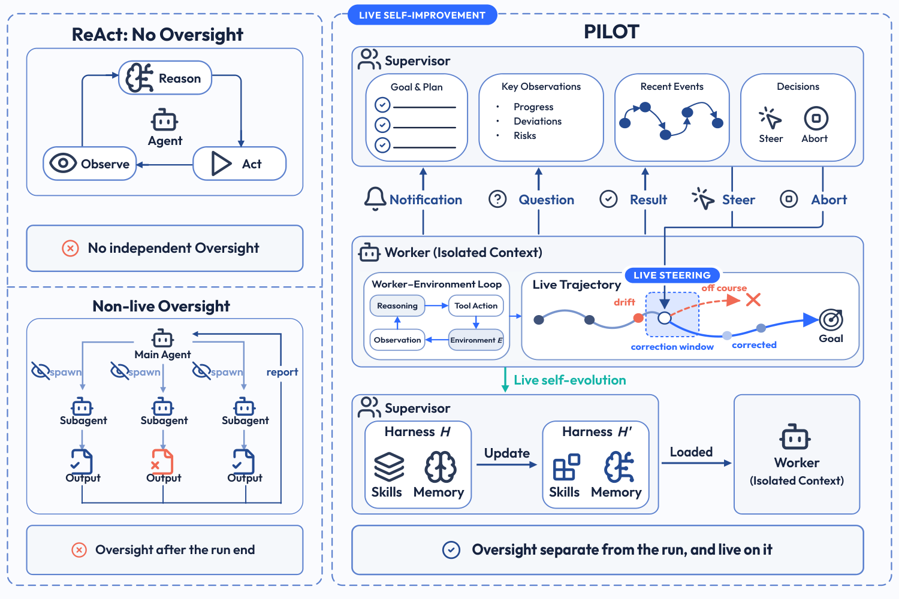

PILOT in the Loop: Live Self-Improvement for Long-Horizon Agents
TL;DR
- PILOT (arXiv 2608.26530; Yang Xiao, Yusong Sun et al., "AllSpark Team") argues self-improvement should be live: a frozen supervisor stays connected to an active worker through a two-way channel, can steer or abort it mid-run, and distils procedures and failure modes into persistent skills/memory while the run is still going — instead of reflecting only after the trajectory ends.
- With the same frozen backbone in both roles, PILOT ranks first in 5 of 6 backbone×benchmark configurations (Terminal-Bench 2.0, SWE-bench Multilingual, SWE-bench Pro; GLM-5.1 and Kimi-K2.6), beating the strongest single-agent harness (Pi) by 5.3 points on TB2.0 average (71.6 vs 66.3) and 4.4 on SWE-bench Pro (59.9 vs 55.5).
- Over 20 self-improvement iterations on Terminal-Bench 2.0, best-observed pass rate climbs +14.6 points (GLM-5.1) and +12.4 (Kimi-K2.6) while mean output tokens per task fall 42.9%/47.4% — the accumulated skill library replaces repeated exploration, more than doubling successful evaluations per million output tokens (+110.3%/+134.0%).
Why this matters
Almost every self-improvement mechanism this tracker follows — Reflexion-style reflection, judge-based evaluation, skill-library evolution à la WikiSkill, harness optimization à la Meta-Harness — is post-hoc: the learning step begins after the trajectory that produced the lesson has ended. That has two costs the paper names precisely. First, the run that generated the lesson cannot be saved by it; a 3-hour Terminal-Bench attempt that drifts at minute 20 is simply lost. Second, a lesson extracted post-hoc cannot be validated until some later rollout, so bad lessons survive a full cycle before being falsified.
The architectural diagnosis is the interesting part. Single-agent self-correction (ReAct + Self-Refine-style loops) is timely but structurally compromised: the same context that must hold the diagnosis is stuffed with execution detail, so the agent judging the strategy is the agent drowning in it. Subagent delegation (Magentic-One, Claude Code subagents) separates contexts but is fire-and-forget: the main agent typically sees a subagent's summary only when it returns. Neither gives you an overseer that is both separate and live. PILOT's claim is that the missing primitive is a persistent two-way channel between a supervisor context (goal, recent events, drift signals) and worker contexts (execution detail), plus permission for the supervisor to write to the persistent harness mid-run.
For this tracker's core thesis — harness-level self-improvement with frozen weights — this is a clean formulation of "the supervisor is the self-improvement role," and the token-efficiency numbers are the strongest evidence yet that skill accumulation pays for its own overhead.
The core idea
Model parameters \( \theta \) stay frozen. What evolves is the persistent harness \( H \), a skill library \( \mathcal{K} \) plus memory \( \mathcal{M} \). A supervisor session runs the whole episode; workers are spawned as isolated sessions that load the current harness:
where \( \tau_j \) is the objective given to worker \( j \), and each worker produces a trajectory \( \xi_j \) of actions/observations in the environment. When the supervisor spots reusable knowledge (or a failure mode worth recording) in a live trajectory, it refines the harness immediately:
so any worker spawned after the update — in the same episode or a later one — loads \( H' \). (Notation as in the paper's §2/Appendix A.2.)
Two coupled mechanisms operate over this state:
- Live steering — the channel supports three worker→supervisor events (Notification: progress/risk report, execution continues; Question: worker pauses for input; Result: runtime auto-delivers final output) and two supervisor→worker actions (Steer: queue guidance for the worker's next turn; Abort: kill a worker whose continuation is useless). Crucially, the supervisor reads the relevant slice of \( \xi_j \) only when diagnosis is needed — its own context stays clean.
- Live self-evolution — the same supervision stream feeds \( \mathcal{K} \) and \( \mathcal{M} \), closing the loop: correction improves this run, distillation improves the next one.

Figure 2 from the paper: the architectural gap. A ReAct loop has no oversight separate from the work; a main agent gets a subagent's output only post-hoc. PILOT's supervisor is both separate and live, and its harness update \( H \to H' \) happens during execution.
How it works
PILOT is implemented as an extension of the Pi coding-agent runtime; supervisor and workers are all sessions of the same frozen model (deliberately, to isolate orchestration effects from capability gaps). The coupled loops:
Supervisor loop(τ, θ, H = (K, M)):
repeat:
if another worker is needed:
choose objective τ_j; W_j ← Spawn(θ, τ_j, H)
receive event (j, e) from any active worker
if e is a Question: reply to W_j
if redirection of W_j is warranted:
inspect relevant portion of ξ_j
Steer: queue guidance for W_j's next turn
else if continuing W_j is no longer useful:
Abort: interrupt W_j
if reusable knowledge found in ξ_j:
H ← Update(H, ξ_j) # live self-evolution
if e is a result/error/abort: mark W_j settled
until task resolved
Worker loop(τ_j, θ, H at spawn):
repeat:
incorporate queued supervisor guidance
reason, act in environment, extend ξ_j
optionally Notification (continue) or Question (pause)
until completion / error / abort
Result: runtime sends (j, result) to supervisor
Evaluation protocol details that matter. In the self-improvement setting, Terminal-Bench 2.0's 89 tasks are swept in iterations; every run in iteration \( i \) starts from an isolated copy of shared state \( H_i \). Skills/memory are created during runs, before any verifier outcome exists — no benchmark signal reaches supervisor or worker mid-run. Verifier outcomes are used only as a retention gate between iterations: updates from passing runs are merged into \( H_{i+1} \), updates from failing runs are dropped, and outcomes never edit update content. All compared harnesses (PILOT, Pi, OpenCode) get the same self-improvement instruction and the same initial skill library.
Two representative steering cases (from Figure 4): in a CoreWars task, the worker burned 20+ minutes tuning synthetic-opponent variants until the supervisor ordered a full strategy change ("find a published warrior source… test against the actual five opponents"); the worker adapted Silk Warrior 1.3 and passed every threshold. In a torch tensor-parallelism task, the supervisor caught a subtle correctness bug — bias added before all_reduce, hence multiplied by world size — and the corrected implementation passed all 13 verifier tests.
Results
One-shot (fresh harness per task). On Terminal-Bench 2.0, PILOT hits 71.9% with GLM-5.1 (best baseline: OpenCode 66.9%) and 71.3% with Kimi-K2.6 (best baseline: Pi 66.9%); on Hard tasks it reaches 55.0% with both backbones, +5.0/+6.7 over Pi. On SWE-bench Pro it averages 59.9% vs Pi's 55.5%, with a striking 65.1% on Kimi-K2.6 (Pi: 59.1%). The one miss: second place on SWE-bench Multilingual with Kimi-K2.6.
Self-improvement (20 iterations). Best-observed pass rate: 66.3% → 80.9% (GLM-5.1), 68.5% → 80.9% (Kimi-K2.6). Under identical conditions and the same initial skill library, PILOT gains +14.6 vs OpenCode's +7.9 and Pi's +2.3 — the harness architecture, not just the instruction, determines how well experience converts into later performance. Skill counts grow 62→83 (GLM) and 50→81 (Kimi); gains concentrate on Hard tasks (+8 and +12 additional passes). Mean output tokens per task drop from 28.5K→16.3K and 41.9K→22.1K including all supervisor turns — oversight pays for itself.
Where steering actually helps. Manual trace inspection classifies a successful run as steering-aided only under strict criteria (supervisor identifies a concrete error/stall, worker follows the correction, success comes via the corrected path). Result: 0% of Easy successes, rising to 6.1% (GLM) and 19.7% (Kimi) of Hard successes. Live steering is a tail-risk mechanism for long fragile execution chains, not a constant companion.
How it connects
- WikiSkill (skill-library-google) and Maintaining Skill Libraries for Long-Horizon Agents (skill-library-long-horizon): the same skill-accumulation thesis, but both operate post-hoc from completed runs. PILOT's differentiator is when distillation happens and that a dedicated role does it; its verifier-gated retention (keep updates only from passing runs) is a cruder filter than WikiSkill's wiki curation — the two are complementary.
- Harness Continual Learning (harness-continual-learning) and Self-Harness / Meta-Harness line: PILOT explicitly positions against these — they generate and select improved harness components across completed work; PILOT additionally acts on the current run.
- Automata from Agent Traces (automata-from-agent-traces): that paper showed agent trajectories compress into small FSMs whose states predict failure early enough to abort at ~32% of trajectory cost. PILOT's supervisor is the model-driven version of that monitor, with Steer added to Abort. An FSM-informed supervisor prompt seems like an obvious hybrid.
- EdgeBench (tracked today): cited by PILOT as the 12-hour-horizon frontier. EdgeBench's log-sigmoid learning curves describe what improvement over long interaction looks like; PILOT is a concrete mechanism for steepening the curve.
- Shadow Evaluation (Can Agents Do Unpublished NeurIPS Research?): those agents failed on judgment — never redesigning after negative reviews. A separate supervisor context whose whole job is "is this strategy working?" is exactly the missing organ that post-mortem identified, though PILOT only demonstrates it on verifiable engineering tasks.
Critical take
The headline self-improvement numbers deserve a careful read. Iterations sweep the same 89 Terminal-Bench tasks, and the self-improvement instruction mandates exactly one skill named exactly after the task ("chess-best-move" → skill "chess-best-move"). So the +14.6-point climb is substantially "solve the same task again with your saved procedure" — verifier-gated task memoization, not generalization to unseen tasks. The paper is upfront that this mirrors a real scenario (developers returning to related work), and the token-efficiency gains are real regardless, but a transfer split (skills learned on tasks A–M, evaluated on N–Z) is the missing experiment. Also, "best observed pass rate" is a max over 20 iterations × 2 runs — a statistic that drifts upward under noise; mean-per-iteration curves would be more honest (Figure 1(c) suggests the trend is real, but endpoint labels quote the max).
The steering analysis cuts both ways: it is admirably strict, but the resulting rates (2.3% of GLM-5.1 successes) mean the one-shot gains over Pi (+5 points) cannot be mostly explained by trace-confirmed steering — the residual is unexplained architecture effects (worker context isolation? notification cadence?), and the classification is manual and unblinded. Finally, supervisor = worker = same frozen model is a clean ablation choice but leaves the most interesting question open: is a cheap supervisor over a strong worker enough (cf. weak-to-strong supervision), or does steering quality bind on supervisor capability? The paper flags this as future work. (One more inference from the setup — the supervisor also holds multi-worker orchestration powers, but experiments don't isolate concurrent-worker benefits; verify in the repo — inferred from the thread and paper text.)
If you remember three things
- Self-improvement has a when axis, not just a what axis: PILOT moves both correction (steer/abort) and distillation (skills/memory) inside the active run, so a lesson can rescue the trajectory that taught it.
- The architecture is two coupled loops over frozen weights: \( W_j \leftarrow \mathrm{Spawn}(\theta, \tau_j, H) \) workers in isolated contexts, a supervisor that reads trajectories on demand, and mid-run \( H \leftarrow \mathrm{Update}(H, \xi_j) \) gated later by verifier outcomes.
- Accumulated harness knowledge is a compression technology: pass rate +14.6/+12.4 while output tokens fall ~43–47% — but on repeated tasks; demand a transfer split before believing it generalizes.